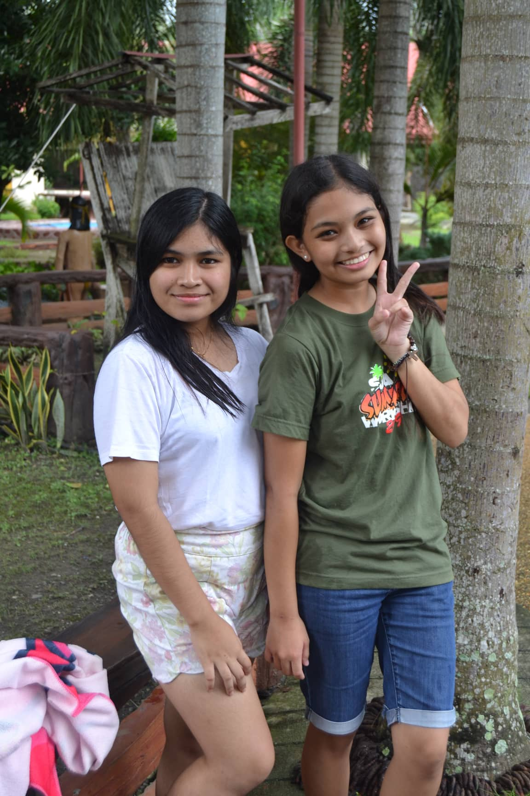
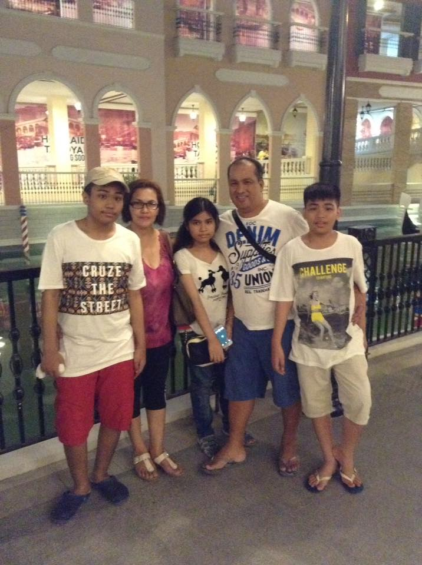

Childhood is one of the best things to experience growing up.1
I would even say that I was very privileged back then, everything was handed to me, magically waking up in a bed, and I've got to experience many things.2
As a very adventurous child, my father reminds me every single day of my name, my mother's and his contact number, my address, and their full names.3
I never realized that that was the first survival skill that my father taught me, that came in very handy whenever they lost me in the mall or a field trip a couple of times.4
As grade-schooler, we were taught about rights and wrong, basic grammar, maths, etc.5
And, as a kid, you also learn how to test an adult's patience by doing all the don'ts.6
So, one day in school, my friends and I were playing hide and seek, to not be it, we went to a room that only sisters can go to.7
Then it became a hide and seek game with the sisters and us.8
With that story, I may come off as the loud kid in class that doesn't do anything.9
Well, I was until my teachers have often called me for recitation.10
Another thing that I've also learned from my childhood is that try to keep a promise.11
You know those promise bracelets and saving each others' hair to keep your friendship longer?12
Yes, I did all that.13
Because of those friends,I then developed my first crush.14
Well, I didn't really develop it, my feelings just got influenced by my friends.15
In sixth grade, everyone started to get more serious as the teachers were making stories about how hard high school will be.16
I on the other hand got scared of the new changes.17
They were discovering new talents, interests, and other stuff that I don't want to take seriously.18
But in the end, I realized that we have to move forward at some time.19
From then on, I was discovering a lot of things about my self.20
High school years were nothing like High school musical movies.1
It was stressful, yet fun, boring, yet exciting, and every pro's and con's combined.2
In this stage of my life, I had dreams, fantasies, and thoughts on how my college life would be.3
And of course, what I never saw coming was the breakdowns, anxiety, peer pressure, and all those negative thoughts in my head.4
Maybe it's just part of puberty.5
For every year in high school, I went on a different path of dreams.6
And with all that I've also made a lot of self-learning experiences.7
For the first year of junior high, I've aimed to try to excel in academics.8
I became top 6 in our class in science, top 5 in math, and nothing else, the arc of being motivated and trying to change my life lasted me the first quarter of grade seven, I've become lazy after that.9
One thing that I've learned from my junior year is my love for food.10
Learning each taste, texture, history, all of that got me very hooked more than trying to be a lawyer, heart surgeon, and businesswoman.11
I never thought I would love a dream so much that it pained me when no one supported me on becoming a chef and a critic.12
When I transferred schools, I took academics more seriously.13
I joined school activities, participated in events, and joined broadcasting competitions.14
I realized that I have been giving my leaders in groups in the past a difficult time by not participating in anything, and being responsible was actually fun and tiring.14
Picking a strand for senior high school was very difficult.15
First, the place that I was living in only offers four strands, and second, the strand has to be connected with your academic track.16
So I decided to pick a "safe" strand which is ABM.17
I hate that strand.18
I have never hated math so much that I was very excited to immediately finish school.19
But through all that, I've met the most amazing people who taught me that friendship is not permanent, but memories are.20
College is all about choices, path choices for your career.1
I had a lot of choices in mind but it's either I sabotaged it or it's not supported.2
The choice that was left for me was none, I didn't know what I wanted before enrolling.3
Before enrolling in a University, we had to have chosen a field of study and take an entrance exam.4
My cousin has convinced me to take an exam at five different universities.5
I felt pressured as I walk down to those halls and answer every question.6
I was still unsure of the choices that I made. Everyone in my family had an opinion on where should I go.7
The choices were PUP, UP, CEU, FEU, and PLM, I never liked it when someone dictates to me where and what I should be doing in life, so I decided to go to a University that they did not choose, UE.8
On the first day of class, I was so worried that I was the only girl because there was no girl insight in my google meet.9
The subjects were hard, but I caught up in the first semester.10
Thinking back, I always thought in high school that IT was the last course that I would take, I was wrong, now I regret paying someone to do all of my codes in 8th grade because I have learned nothing at all after that.11
Whenever I look at my classmates and how much effort they put into their works, I sometimes feel like I should be giving the same vibe as them.12
For inspiration, I tend to think about what my father and I talked about.13
He became my inspiration throughout the hardship of coping up with my classmates.14
I liked the idea that one day, I will be able to help him with his goal.15
There may be times that I don't necessarily get what I want in life, but it's a part of my choice to go on a different path where it would be difficult to achieve it.16
But reaching my dream won't stop me.17
I will keep moving forward and not hold back. 18
One day I will be the person that I want me to be.19My dreams will soon be a reality.20